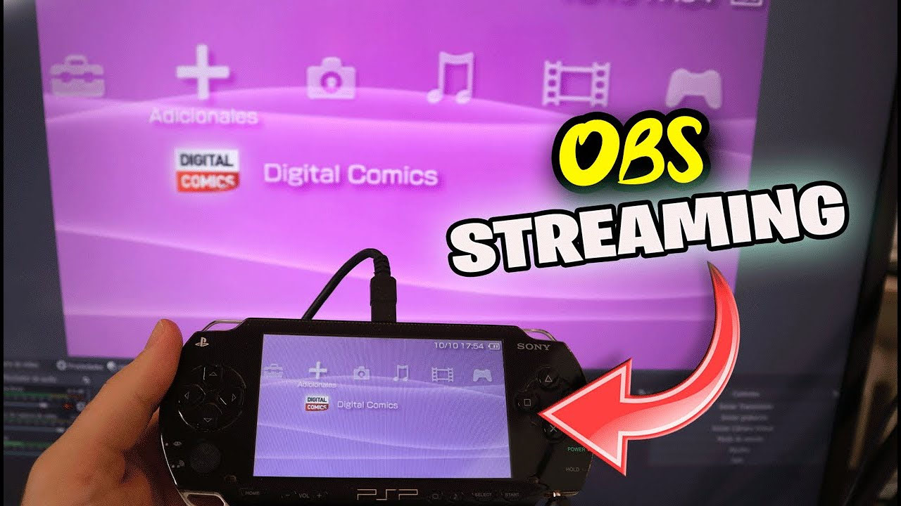
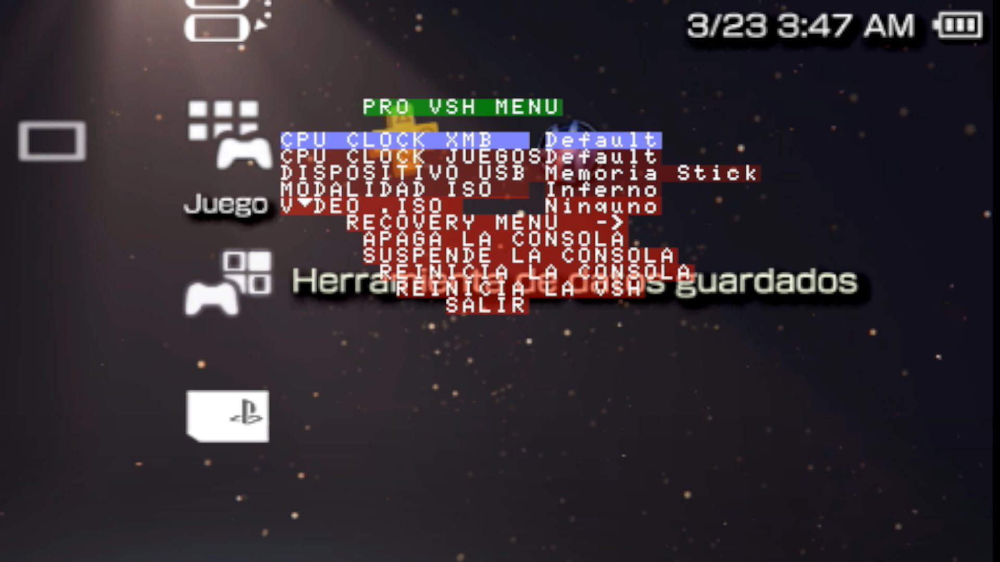

PSP con OSB
Plugin (p.o.c) de video UVC de PS Vita portado a PSP por @Xerpi. Este es un complemento que te permite transmitir la pantalla de tu PSP a tu computadora a través de USB.
Para esta Guia
Requisitos para este tutorial
- PC o Notebook (Para pasar Archivos)
Programas para este Tutorial
- .rar PSP con OSB
- Web Oficial github.com
Para Empezar este Tutorial
- Descargamos los archivos
- Descomprimimos los archivos .rar o .zip
- seplugins.rar
- Con la última versión disponible
- Una vez descargado nuestro archivo
- Lo extraemos y copiamos
- La carpeta seplugins se copia
- Si el archivo vsh.txt nos pide sobrescribir le decimos que no
- Y abrimos el archivo de nuestra consola y cópianos el contenido del otro archivo en otra línea nueva
- Y reiniciamos nuestra consola
- Una vez iniciada la consola
- Habilitamos el plugins en nuestra consola
- Para esto mantenemos presionado el botón
 durante unos segundos
durante unos segundos - Nos saldrá el menú de Pro VSH MENU 
- Dentro de este menú
- Vamos a recovert menú
- Después buscamos plugins
- Y dentro buscamos uvc.prx [VSH]
- Si dice Disabled lo cambiamos por Enabled
- Y salimos del menú del todo
- recomendación si queremos volver a pasarle archivo desde el USB solo queda dejar el plugins en Disabled y listo podemos volver a pasarle archivo a nuestra consola PSP desde el USB
- En nuestro PC abrimos OBS Studio
- Dentro del OBS podemos crear una Escenas si queremos o usamos una echa
- En fuentes agregamos un Dispositivo de captura de video y le agregamos un nombre
- En Dispositivo buscamos uno que diga USB Video Device y listo lo demos hay que ir probando para ver si encontramos algunas mejoras
- Y listo a grabar y transmitir nuestra consola PSP
- Puede ir lento ya este método no a sido actualizado al día de hoy
- Soluciones de problemas
- Si usas Windows 10, es posible que debamos cambiar los permisos de acceso a la cámara en la configuración de privacidad
- Recuerda que si algo sale mal (como que la PSP no arranca) siempre puedes presionar
 R al arrancar para ingresar al modo de recuperación
R al arrancar para ingresar al modo de recuperación - Y listo a disfrutar la aplicación


×